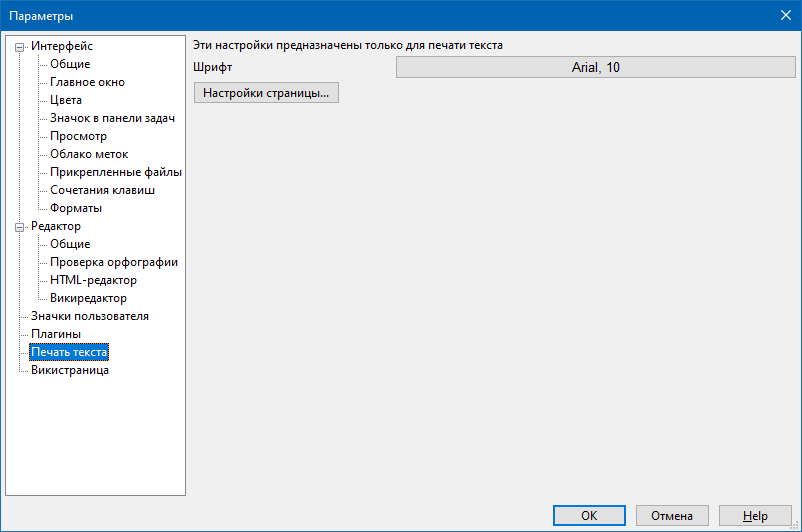

Печать текста

Данный раздел позволяет настроить параметры печати текстовых заметок, а также HTML-страниц в режиме HTML и викистраниц в режимах Вики и HTML.
В данном разделе можно настроить размер и начертание шрифта (группа параметров Шрифт), которым будет печататься текст, а также задать параметры страницы.
Внешний вид диалога печати будет различаться в зависимости от операционной системы и драйверов к принтеру.